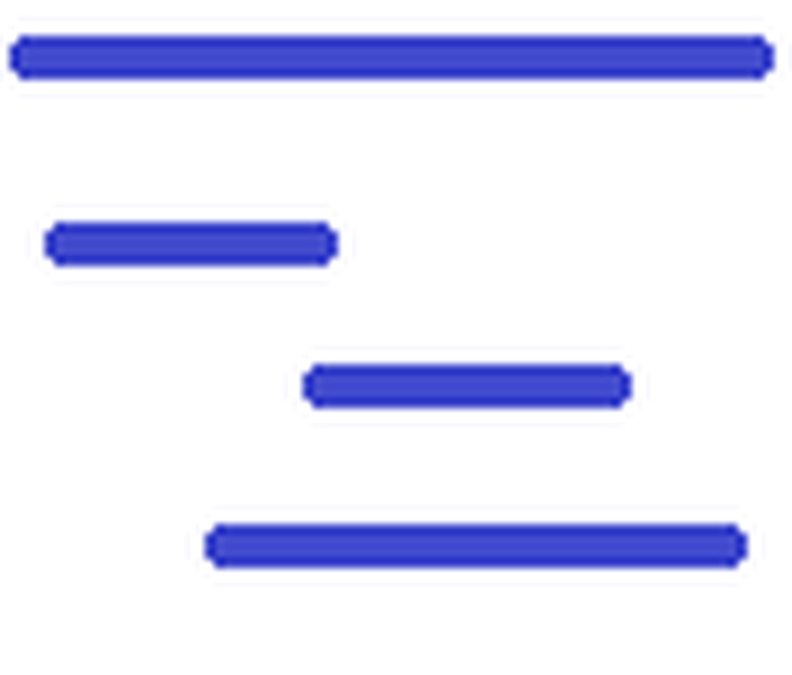

 miniProject - versão 1.01
Aplicativo para a elaboração de redes de projetos do SIGA
Para utilizar o miniProject exporte a rede do SIGA no formato miniProject e altere a rede utilizando o aplicativo miniProject instalado em seu computador.
Depois carregue a rede utilizando a opção de importar no SIGA.
Aplicativo miniProject:
carrega/salva a rede do SIGA no formato JSON com a extensão "mpjt".
permite a alteração da rede no grid ou editando a tarefa.
apresentação da rede no formato de Gantt.
lista de recursos.
Principais características:
a duração da tarefa inclui a data de início e término da tarefa.
marcos de tarefas com duração 0 (zero).
nesta versão o miniProject somente suporta tarefas do tipo TI (Término - Início).
o miniProject suporta tarefas com latência (lag) - positivas ou negativas.
calculo automático de peso das tarefas pai.
tarefas concluídas (100%) não podem ser alteradas (ou criar tarefas dependentes).
Como utilizar o miniProject:
para carregar/salvar a rede utilize o menu "Abrir rede" e "Salvar rede".
utilize os botões na barra de botões para criar, excluir e identar tarefas, alterar a visualização e exibir recursos.
você pode alterar a rede no grid de tarefas ou clicando em editar tarefas.
para adicionar um marco é necessário editar a tarefa e atribuir duração 0 (zero) para a tarefa.
para criar dependências entre tarefas utilize a coluna "depen" ou diretamente no gráfico Gantt.
para criar latência (lag) na coluna "depen" informe a tarefa dependente ":" + quantidade de dias. Ex: 5:10 - a tarefa corrente é dependente da tarefa 5 com um lag de 10 dias ou 5:-10 a tarefa iniciará 10 dias antes.
para atribuir pesos utilize a coluna "peso". O cálculo de peso das tarefas pai é realizado automaticamente.
para incluir recursos selecione recursos na barra de opções e clique no botão (+).
Atualização de versão
Verifique no wiki SIGA a versão mais recente do miniProject.
Versão 1.01 - nov/2020
- recalcular pesos quando excluir tarefas
- não permitir alterar a data de início, fim e duração de tarefas pai quando utiliza o Editor de tarefas
Versão 1.0 - out/2020